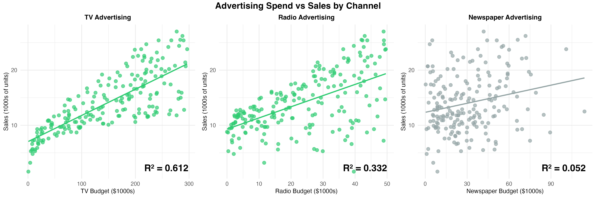

Which Marketing Channels Deliver the Best Return on Investment?
Author
Arttu Isosaari
Introduction
Companies spend money on advertising to increase sales, but which advertising channels actually work? If you have $1,000 to spend, should you buy TV ads, radio spots, or newspaper ads?
In this analysis, I look at sales data from 200 different markets to figure out which advertising channels give the best return on investment. Some channels might seem important but don’t actually increase sales much, while others are surprisingly effective.
Using multiple linear regression, I can measure exactly how much each advertising channel contributes to sales. This tells us both whether spending helps and by how much.
Data Overview
The dataset has 200 markets with information on three advertising channels and their sales:
TV, Radio, Newspaper — Advertising budgets (thousands of dollars)
Sales — Product sales (thousands of units)
Analysis
The Model
We fit a multiple linear regression model to predict sales based on advertising spend across all three channels:
In simple terms: this model estimates how much each advertising channel (TV, Radio, Newspaper) contributes to sales, while accounting for random variation (ε).
Regression Results
Code
library(ggplot2)library(scales)# Fit modelmodel <-lm(Sales ~ TV + Radio + Newspaper, data = dat)summary_model <-summary(model)print(summary_model)
Call:
lm(formula = Sales ~ TV + Radio + Newspaper, data = dat)
Residuals:
Min 1Q Median 3Q Max
-8.8277 -0.8908 0.2418 1.1893 2.8292
Coefficients:
Estimate Std. Error t value Pr(>|t|)
(Intercept) 2.938889 0.311908 9.422 <2e-16 ***
TV 0.045765 0.001395 32.809 <2e-16 ***
Radio 0.188530 0.008611 21.893 <2e-16 ***
Newspaper -0.001037 0.005871 -0.177 0.86
---
Signif. codes: 0 '***' 0.001 '**' 0.01 '*' 0.05 '.' 0.1 ' ' 1
Residual standard error: 1.686 on 196 degrees of freedom
Multiple R-squared: 0.8972, Adjusted R-squared: 0.8956
F-statistic: 570.3 on 3 and 196 DF, p-value: < 2.2e-16
I fit a multiple linear regression model with Sales as the outcome and TV, Radio, and Newspaper budgets as predictors. Key result: The model explains 89.7% of the variation in sales (R² = 0.897), which means advertising spending is a strong predictor of sales across these markets.
What the Coefficients Mean
Here’s the business translation of our estimates:
Channel
Coefficient
Interpretation
Significant?
TV
0.046
Each $1,000 spent on TV → 46 additional sales
✓ Yes (p < 0.001)
Radio
0.189
Each $1,000 spent on Radio → 189 additional sales
✓ Yes (p < 0.001)
Newspaper
-0.001
Each $1,000 spent on Newspaper → no measurable effect on sales
✗ No (p = 0.86)
Radio is 4 times more effective than TV at generating sales—each $1,000 in Radio spending drives 189 additional sales, compared to 46 for TV.
Key Visualizations
ROI Comparison by Channel
This chart compares how many additional sales each advertising channel generates per $1,000 spent. Green bars show statistically significant channels; grey indicates no measurable effect:
These scatter plots reveal the relationship between spend and sales for each channel, with fitted regression lines. Notice how clearly TV and Radio show upward trends, while Newspaper is flat:
Code
knitr::include_graphics("plots/scatter_grid.png")

Key Findings
Based on this analysis, here’s what the data shows:
Radio delivers the best ROI: Each $1,000 invested in radio advertising generates 189 additional sales—significantly better than any other channel. Radio is clearly the most efficient channel.
TV is effective but less efficient: TV does drive sales reliably (46 additional sales per $1,000 spent), and the effect is highly significant. However, it’s about 4 times less efficient than radio.
Newspaper advertising shows no measurable effect: The newspaper coefficient is essentially zero (p = 0.86), meaning we cannot detect any reliable relationship between newspaper spending and sales. This doesn’t prove newspaper is useless, but it suggests that in these markets, it’s not driving sales.
The overall model is strong: Our three-channel model explains 89.7% of the variation in sales across markets—a solid fit. This means advertising spend (across these channels) is a primary driver of sales outcomes.
Efficiency matters more than assumptions: Radio and TV both work, but radio is dramatically more efficient. Companies shouldn’t assume all advertising channels are equally effective—the data clearly shows which channels deliver better returns.
Example Budget Allocation
Based on the regression coefficients, we can estimate the sales impact of different budget allocations. While actual results will vary depending on market conditions and campaign execution, here’s an example of how a company might optimize their spending:
If a company has $200,000 to allocate:
$150,000 in Radio → ~28,350 additional sales (189 sales per $1k × 150)
$50,000 in TV → ~2,300 additional sales (46 sales per $1k × 50)
$0 in Newspaper → no measurable return
Total expected impact: ~30,650 additional sales
This allocation prioritizes the most efficient channel (Radio) while maintaining some TV investment for market coverage.
Limitations
This analysis demonstrates a clear pattern: radio advertising delivers better results than TV for driving sales in these markets. However, a few factors should be considered when applying these insights:
Data limitations: This dataset is from a statistics textbook and doesn’t include modern digital channels like social media or search advertising. Real-world marketing decisions today would need to account for these additional channels.
Generalizability: These findings come from 200 specific markets. Different product categories or geographic regions might show different patterns.
Despite these limitations, the core insight remains valuable: not all advertising spending is equally effective. The data clearly shows which channels work and which don’t.
Methods Note
Tools: Analysis conducted in R using Quarto. AI coding assistant (Claude Code) used to accelerate implementation and create visualizations.
The statistical approach, data interpretation, and business insights are my own work. AI tools handled coding tasks, allowing me to focus on analysis.
Data source: Introduction to Statistical Learning textbook (James, Witten, Hastie & Tibshirani)